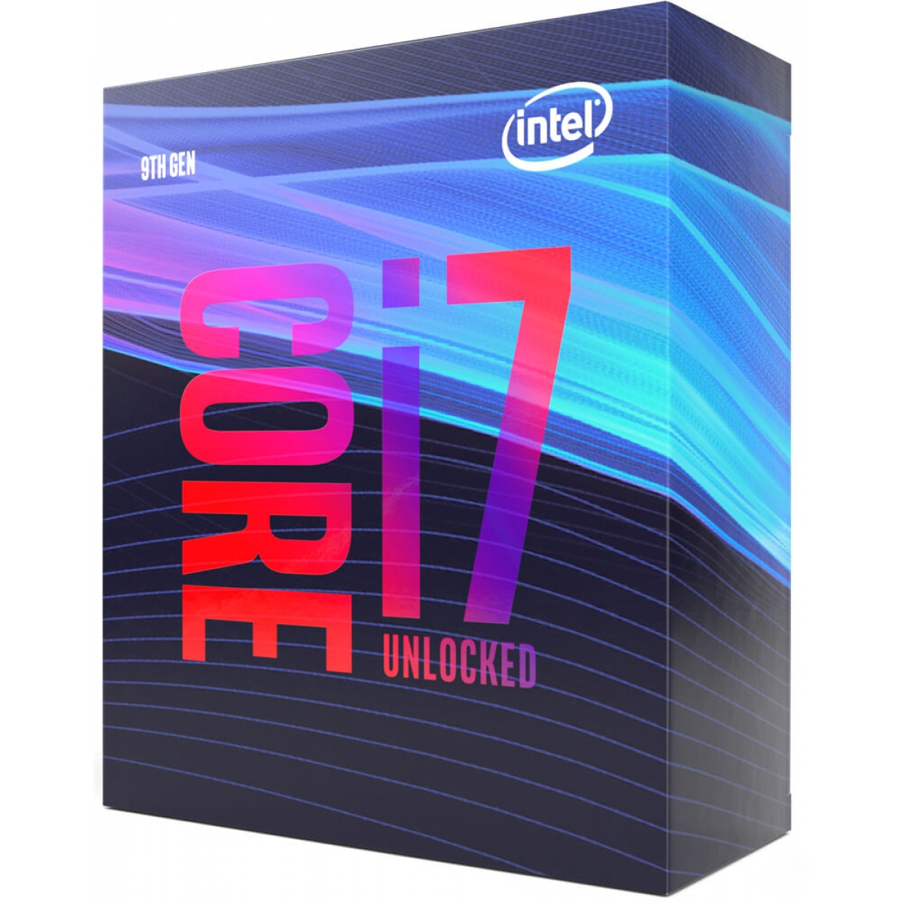
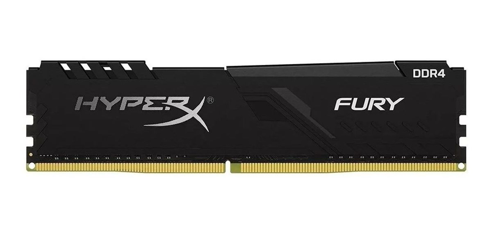
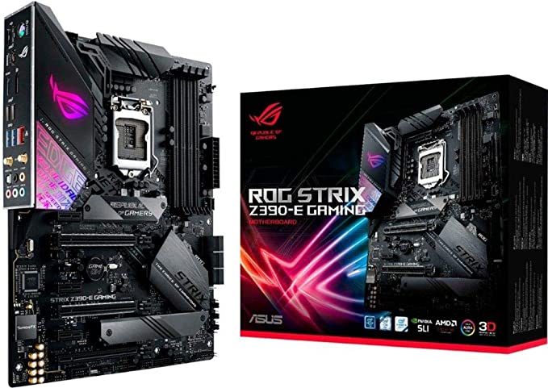
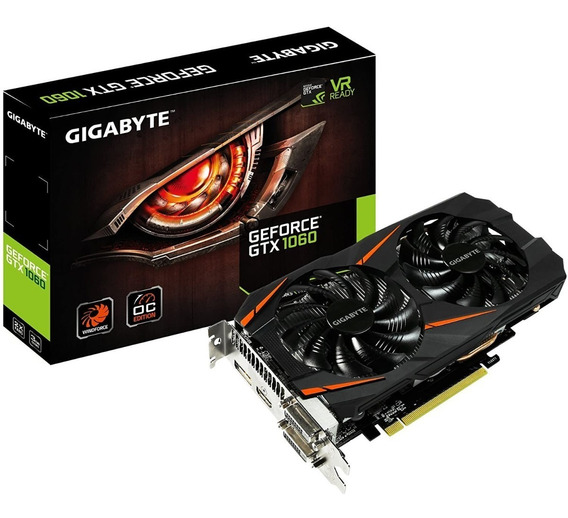
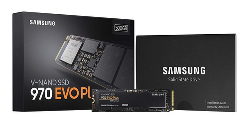
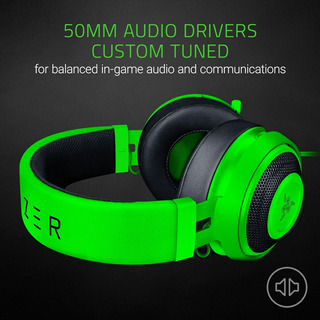
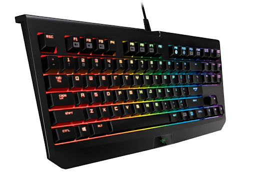
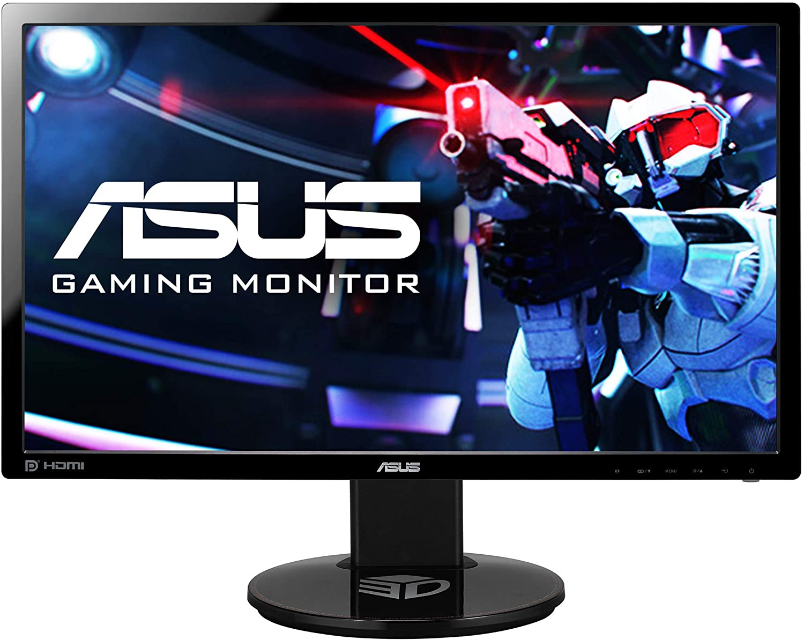
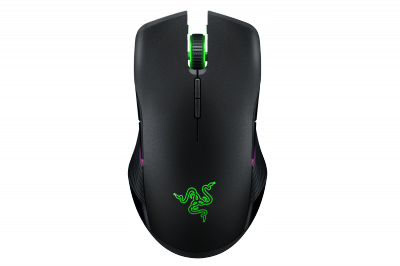
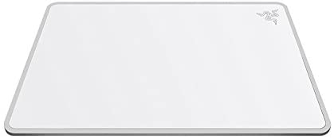

Computador
¿Querías ver la PC de Little Coby?
Pues aqui puedes ver todos los componentes que tiene su computador.
¿Quieres saber cuáles son los requisitos mínimos y recomendados para jugar a Streamer Simulator en PC?
A continuación te mostramos los requerimientos y las especificaciones técnicas oficiales que necesita
tu ordenador para correr el juego y así puedas conocer cuánto espacio ocupa, cuánto de RAM, procesador
o gráfica es recomendable tener para conseguir el mejor rendimiento y todo lo necesario para saber si
tu PC es compatible con Streamer Simulator o no.
Requisitos Mínimos
SO: Windows XP, Vista ó 7
Procesador: 1.2 GHz
Memoria: 4 GB de RAM
Gráficos: DirectX 9 Compatible Tarjeta gráfica Card
DirectX: Versión 10
Almacenamiento: 300 MB de espacio disponible
Requisitos Recomendados (por su servidor)
- PROCESADOR : Intel Core i7-9900K 3.6 GHz - 4.00 GHz

- RAM: 16.00GB

- PLACA MADRE: ROG STRIX Z390-E GAMING

- TARJETA GRAFICA : GEFORCE NVIDIA GTX 6600 6GB

- SSD: SAMSUNG V-NAND SSD 970 EVO PLUS NVMe M.2

- AUDIFONOS: KRAKEN PRO v2 Quartz

- TECLADO: RAZER BLACKWIDOW TOURNAMENT EDITION CHROMA V2 QUARTZ

- PANTALLAS : ASUS Monitor GAMER 24" VG248QE
LG 1920X1080 24''
SAMSUNG 1280X720 19''

- MOUSE: Razer Lancehead Tournament Quartz Edition

- MOUSEPAD: Razer Invicta Quartz Edition Mouse Mat
